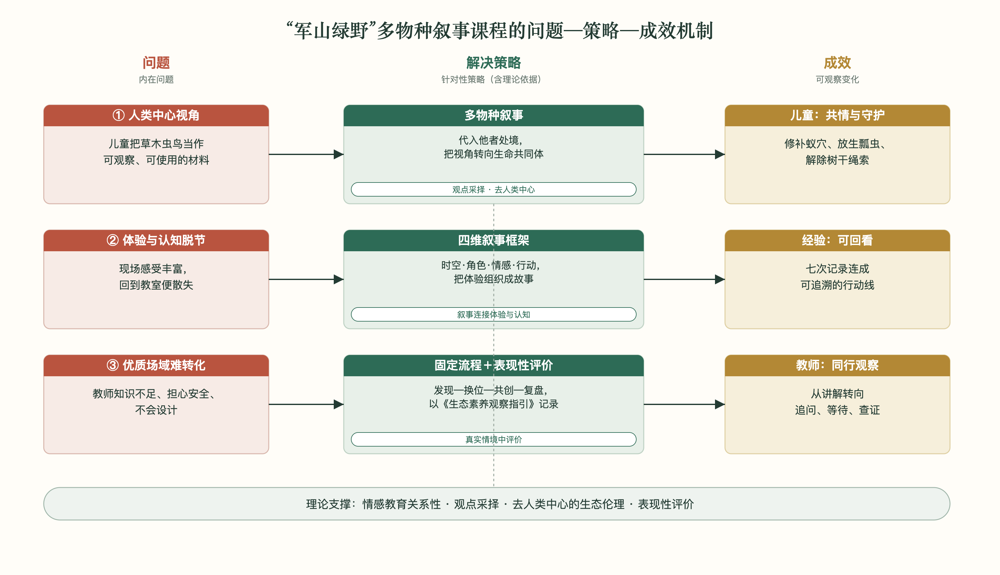
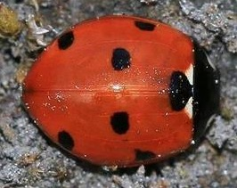
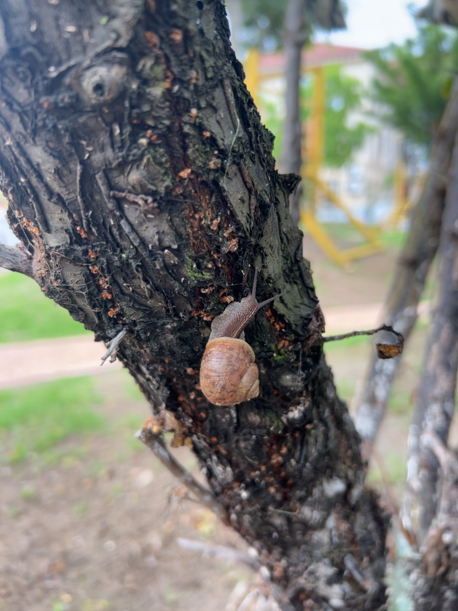
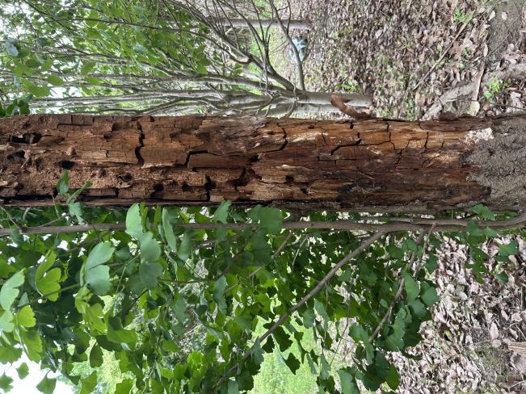
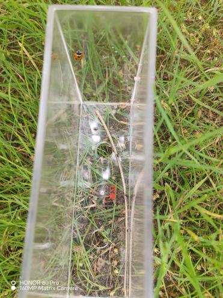
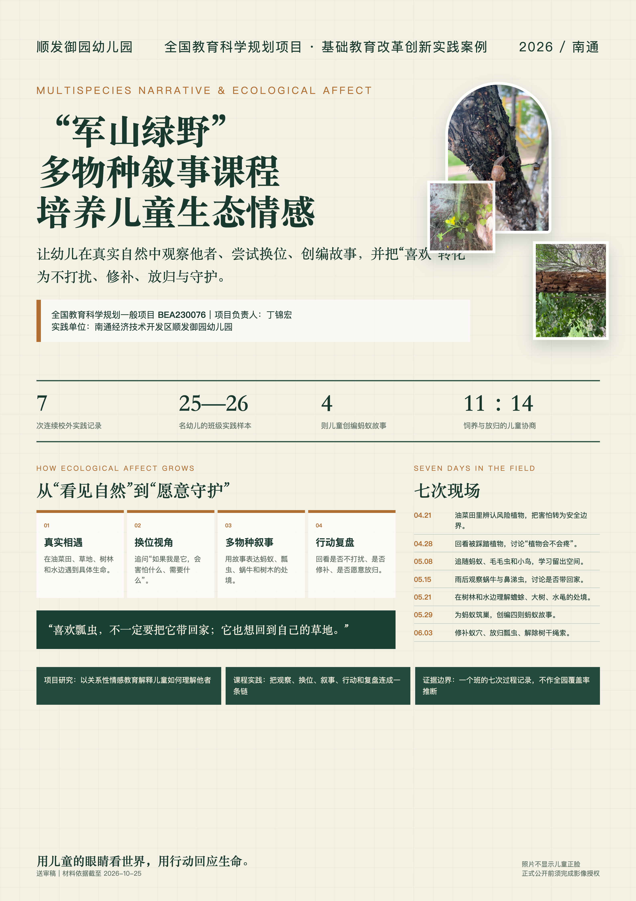

南通市竹行街道星怡幼儿园
- 使用方式
- 将案例纳入园本课程与日常教研，借鉴“现场发现—提出问题—换位表达—叙事共创—行动复盘”的过程组织自然探究，并结合本园自然环境和师资条件实施。
- 可观察成效
- 幼儿在持续观察、比较表达、合作协商和爱护自然等方面出现可记录的变化；教师对问题生成、过程观察和活动反思形成新的做法。
佐证材料
- 案例推广应用证明
- 课程安排与教研通知
- 活动观察记录与儿童作品
- 教师观察与家长反馈
- 活动照片
全国教育科学规划项目 · 基础教育改革创新实践案例
当幼儿蹲下来看见一只蚂蚁、一只蜗牛、一棵受伤的树，“爱护自然”才开始从一句要求，变成一种能够理解他者、约束自己并主动守护的情感能力。
本栏对应申报信息表“案例概要”。
南通经济技术开发区顺发御园幼儿园是全国教育科学规划一般项目“青少年情感教育的内涵、体系和范式研究”（BEA230076）的实践单位，把该项目对情感教育关系性的研究认识用到幼儿与自然相处的课程里。军山绿野距园所步行约十分钟，园所以一个大班为持续观察对象，自2026年4月起每周进入林地、草地和水边，改变过去认物种、做手工、一次性参观的做法。针对儿童容易把草木虫鸟当作可观察、可使用的材料，课程以“多物种叙事”为主线，让幼儿在真实相遇中看对方的处境，借“如果我是它”尝试换位，用讲故事、投票和复盘表达判断，再把共情落到修补蚁穴、放生瓢虫、保护树木上。课程把安全教育和生命教育放在一起：遇到有毒植物先立边界，再谈植物作为生命如何被对待；无意伤害时也不回避，把修补变成学习。教师和幼儿一起观察，不再只当答案提供者，依据儿童的原话、选择和行动调整课程。项目研究把情感目标拆成可经历的观察、换位、叙事、行动和复盘。七次连续记录显示，儿童开始说出其他生命的困难和需要，也能在协商后修正做法。当前材料支持一个班的阶段性判断。
本栏对应申报信息表“解决的主要问题、解决问题的过程与方法”。

这项实践要解决三个问题。其一，自然教育停留于“人类中心”视角，儿童把草木虫鸟当作可观察、可使用的材料，难以理解它们的处境。其二，体验与认知脱节，幼儿在现场感受丰富，回到教室便散失，缺少把感受组织起来的媒介。其三，优质自然场域难以转化为课程，教师知识不足、担心安全、不会设计，资源被零散使用。
项目研究给出判断：情感不是抽象态度，而是在具体关系中生成；儿童理解他人靠换位，不靠说教。园所据此引入“多物种叙事”，把课程视角从“儿童中心”转向“生命共同体”，让幼儿代入蚂蚁、瓢虫、蜗牛、树木等他者的处境。其依据是观点采择与“去人类中心”的生态伦理：只有把动植物当作有处境、有需要的生命，儿童才可能从观察走向共情。
策略上，以“四维叙事框架”组织课程：时空取自真实节气与场地，角色借“如果你是它，会怎样”实现换位，情感追踪儿童是否注意到他者需要，行动要求判断进入真实生活。实施按“现场发现—提出问题—换位表达—叙事共创—行动复盘”推进，并以《幼儿生态素养观察指引》作表现性评价，从生态认知、生命共情、生态行动、创意叙事四个维度记录儿童表现。教师、家庭和社会共同提供资源，降低教师设计课程的难度。
从一个大班的七次记录看，儿童从只问“它是什么”，转向“它害怕什么、需要什么、我们能怎么做”，并出现修补蚁穴、放生瓢虫、解除树干绳索等行动；教师从讲解转为追问、等待和共同查证。
本栏对应申报信息表“案例创新点”。
一是把校外自然场域变成稳定的课程安排，不再是一次次偶发活动。园所用步行约十分钟的军山绿野，固定时间、路线、安全规则和返园复盘，让林地、草地、水边持续进入班级课程，活动频次和时长按课表、天气与安全条件安排。它解决的是校外资源“去过但留不下”的问题。
二是用多物种叙事连接观察与情感。课程从蚂蚁、瓢虫、蜗牛、蟾蜍和树木的实际处境出发，不要求儿童先懂物种知识再表态，借“如果我是它”的提问、故事创编和角色模拟，把“它是什么”换成“它正在经历什么”。四则蚂蚁故事和放生瓢虫的讨论说明，叙事帮儿童把观察整理成对他者需要的表达。
三是用真实行动和复盘代替口号式评价。教师不要求学生复述“保护自然”，只观察他们是否不踩蚁巢、是否愿意放归、是否在发现错误后修补、能否说清选择理由。6月3日修补蚁穴、11∶14协商放生、解除树干绳索，都是可回看的行动证据。这套评价把项目对情感关系性的研究认识变成可观察的儿童行为，也给教师调整下一次现场任务提供依据。
本栏对应申报信息表“案例实践及推广情况”。
2026年4月21日至6月3日，园所以一个大班为持续观察对象，完成七次军山绿野实践：4月21日、4月28日各记录26名幼儿，5月8日记录25名幼儿，5月29日形成四则蚂蚁故事，6月3日围绕瓢虫去留形成11人饲养、14人放生的表决，并出现修补蚁穴、放归瓢虫、解除树干绳索等行动。儿童先问“它是什么”，后来问“它害怕什么、需要什么、我们能怎么做”；教师从直接讲解转向追问、等待和共同查证。
教师把儿童原话、冲突、投票和后续行动整理成一页记录，在下一次现场前回看；返园复盘请儿童说明“当时发现了什么、改变了什么、下一次怎样做”，让七次材料连成一条可追溯的行动线。七份记录都有时间、地点、主题、参与对象、活动过程、教师思考和小结，可回看具体情境。
本案例已在五个单位形成应用。南通市竹行街道星怡幼儿园整园常态采用，把案例纳入园本课程与日常教研，幼儿在持续观察、比较表达、合作协商和爱护自然等方面出现可记录的变化，教师对问题生成和过程观察形成新的做法。南通市小海街道学前教育集团结合自身场地与师资，选择性借鉴自然观察、材料比较和儿童问题记录等模块，幼儿在自主提问和合作表达上有所发展。陕西省汉中市城固县第二幼儿园把案例作为教师研修与教研共同体的学习资源，参训教师在提出问题、观察儿童、组织合作和记录情感表现方面形成新的做法。南通高等师范学校附属小学把自然观察、合作表达和过程记录用于幼小衔接，儿童在表达感受、倾听同伴、遵守安全规则和适应集体活动方面呈现连续发展。南通市中兴街道望江社区关心下一代工作委员会把案例用于家庭亲子自然观察与亲子表达，亲子互动和儿童观察表达的主动性增强。五个单位的使用方式、覆盖范围、可观察变化及活动记录、儿童作品、教师或家长反馈等佐证，集中收录于支撑材料网站。
上述变化来自连续活动记录中的儿童原话和行为，属阶段性定性观察。可迁移的是四个条件：园所周边有可稳定进入的自然场域；教师能守住安全边界并追随儿童问题调整计划；课程为观察、表达、行动和复盘保留连续时间；学校把儿童真实选择而非标准答案作为评价依据。自然资源、物种和活动形式应依本地条件调整，不能照搬。
本页不公开展示含个人信息的证书原件。
活动记录为2026年4月21日至6月3日的连续过程材料；引用儿童原话均匿名化。
在油菜田发现泽漆、毛茛和野生蘑菇等风险植物，由害怕转为安全讨论，提出“植物会不会也害怕我们”，形成只观察、不采摘的约定。
看到此前被踩踏的植物，讨论“植物会不会疼”，并共同调整行走和采集方式。
围绕蚂蚁带食物、寻找蚁窝和观察毛毛虫展开探究，开始主动给昆虫留出空间。
雨后比较蜗牛和鼻涕虫的外形与生活环境，讨论“喜欢是否一定要带回家”。
遇到蟾蜍、歪倒大树、水黾、蜘蛛和水杉呼吸根，围绕害怕、受伤、家园和共生提出多种解释。
比较蚂蚁对不同食物的偏好，看到护林员割草后担心蚂蚁失去家园，合作搭建巢穴，创编四则蚂蚁故事。
挖土时无意破坏蚁巢后回填覆土；就瓢虫去留形成11人饲养、14人放生的表决并放归；发现绳索勒树后主动解绳改换游戏。
照片仅作现场说明，不作为效果证明；正式公开前须确认拍摄、肖像与知识产权授权。





案例宣传海报（A2），与照片一并作为配套宣传材料；正式公开前须确认影像、肖像和知识产权授权。

公开页仅提供匿名化文本；含个人信息的正式件通过评审渠道提供。